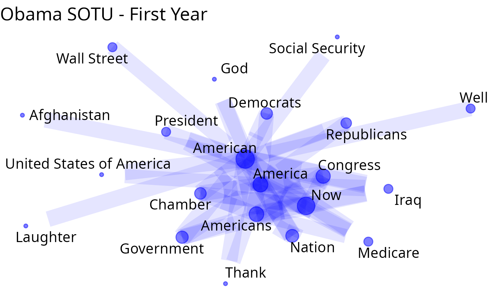

01 - Entity extraction with regex
Source:vignettes/entities_and_relation_extraction.Rmd
entities_and_relation_extraction.RmdEntity extraction and its relations
The package {networds} provides a set of tools to extract entities and relations from text. The first of this tools uses one of the simples form: by using the rule based approach. It contains a rule based extraction algorithm and a rule based relation extraction algorithm. Another similar package is textnets, from Chris Bail. It capture the proper names using UDpipe, plot word networks and calculates the centrality/betweeness of words in the network. To extract entities based on Part of speech tagging, see other functions of this package,
The functions of {networds} do not work so well like the NER, but we think that, in some situations, they can be better job than traditional joining unigram, bigrams, trigrams and so on. Because it is a rule based approach, it is very simple to use, need less dependencies and runs also fast (or maybe less slower). It will also requires a lot of post-cleaning, but you have the absolute control over which words are extracted and what words are rejected.
In Natural Language Processing, to find proper names or terms that
frequently appears together is called “collocation”, e.g., to find
“United Kingdom”. You can learn more what is collocation and its
statistical details and r function in this article,
and it is also possible to functions like quanteda.textstats::textstat_collocations(),
TextForecast::get_collocations()
to identify them, but it also will require a lot of data cleaning,
specially if you want is proper names.
How it works?
The function captures all words that:
- begins with uppercase,
- followed by other uppercases, lowercase or numbers, without white
space
- it can contain symbols like
_,-or.. In this way, words like “Covid-19” are captured. - the user can specify a connector, like “of”or “of the” so, words like “United States of America” are also captured
In languages such as English and Portuguese, it extracts proper
names. In German, it also extracts nouns. There is some trade-off, of
course. It will capture a lot of undesired words and will demand
posterior cleaning, like:
- It does not contain any sort of built-in classification.
- “Obama Chief of Staff Rahm Emanuel” will be captured as one entity,
what is not wrong et al, but maybe not what was expect.
The downsides
It will not capture:
- entities that begin with lowercase.
- it does not delves with words ambiguity. For example, is “WHO” referring to question or World Health Organization? Washington is a person or a place?
To overthrow this problemas, networds has a set of other functions that works with Part of Speech tagging and Named Entity Recognition. If the problems enumerated are a big problem to your case, take a look at the next session “Extract entity co-ocurrences with POS”.
Conclusion
In my experience, the approach of this section using regex works better to certain types of text than others. Very well formatted text, like Books, formal articles can be a good option that works well with this function. Text from social media, because it lacks formalities of the language and have a lot of typos, lacking uppercase sometimes, or written all in uppercase, this approach will not work so well.
Using networds: extracting entities with regex
After installing the package (see Readme), load it:
So, let’s extract some proper names from a simple text:
"John Does lives in New York in United States of America." |> extract_entity()
#> [1] "John Does" "New York"
#> [3] "United States of America"Or it is possible to use other languages, specifying the parameter
connectors using the function
connectors(lang). Checking the connectors:
connectors("eng")
#> [1] "of" "of the"
# or you can also use for english, to get the same result:
connectors("en")
#> [1] "of" "of the"
# For portuguese
connectors("pt")
#> [1] "da" "das" "de" "do" "dos"
# to get the same result:
connectors("port")
#> [1] "da" "das" "de" "do" "dos"
# by default, the functions uses the parameter "misc". meaning "miscellaneous".
connectors("misc")
#> [1] "of" "the" "of the" "von" "van" "del"Using with other languages: suppressWarnings(
"João Ninguém mora em São José do Rio Preto. Ele esteve antes em Sergipe" |>
extract_entity(connect = connectors("pt"))
#> [1] "João Ninguém" "São José do Rio Preto" "Ele"
#> [4] "Sergipe"
vonNeumann_txt <- "John von Neumann (/vɒn ˈnɔɪmən/ von NOY-mən; Hungarian: Neumann János Lajos [ˈnɒjmɒn ˈjaːnoʃ ˈlɒjoʃ]; December 28, 1903 – February 8, 1957) was a Hungarian and American mathematician, physicist, computer scientist and engineer"
vonNeumann_txt |> extract_entity()
#> [1] "John von Neumann" "NOY-" "Hungarian"
#> [4] "Neumann János Lajos" "December" "February"
#> [7] "Hungarian" "American"Extracting a graph
It is possible to extract a graph from the extracted entities. First,
happens the tokenization by sentence or paragraph. Than, the entities
are extracted using extract_entity(). Than a data frame
with the co-occurrence of words in sentences or paragraph is build.
vonNeumann_txt |> extract_graph()
#> Tokenizing by sentences
#> # A tibble: 27 × 2
#> n1 n2
#> <chr> <chr>
#> 1 John von Neumann NOY-
#> 2 John von Neumann Hungarian
#> 3 John von Neumann Neumann János Lajos
#> 4 John von Neumann December
#> 5 John von Neumann February
#> 6 John von Neumann Hungarian
#> 7 John von Neumann American
#> 8 NOY- Hungarian
#> 9 NOY- Neumann János Lajos
#> 10 NOY- December
#> # ℹ 17 more rowsOne of the parameters is sw that means “stopwords”. It
is possible to add a vector stopwords.
my_sw <- c(stopwords::stopwords(
language = "en",
source = "snowball", simplify = TRUE
), "lol")
vonNeumann_txt |> extract_graph(sw = my_sw)
#> Tokenizing by sentences
#> # A tibble: 27 × 2
#> n1 n2
#> <chr> <chr>
#> 1 John von Neumann NOY-
#> 2 John von Neumann Hungarian
#> 3 John von Neumann Neumann János Lajos
#> 4 John von Neumann December
#> 5 John von Neumann February
#> 6 John von Neumann Hungarian
#> 7 John von Neumann American
#> 8 NOY- Hungarian
#> 9 NOY- Neumann János Lajos
#> 10 NOY- December
#> # ℹ 17 more rowsThis process can take a while to run if the text/corpus is big. So, if you are interested only in some words, so first of all, filter the sentences/paragraphs with the desired words, and after that, extract the graph. Seeing another example, extracting from a Wikipedia article:
page <- "https://en.wikipedia.org/wiki/GNU_General_Public_License" |> rvest::read_html()
text <- page |>
rvest::html_nodes("p") |>
rvest::html_text()
# looking at the scraped text:
text[1:2] # seeing the head of the text
#> [1] "\n\n"
#> [2] "The GNU General Public Licenses (GNU GPL or simply GPL) are a series of widely used free software licenses, or copyleft licenses, that guarantee end users the freedoms to run, study, share, and modify the software.[7] The GPL was the first copyleft license for general use. It was originally written by Richard Stallman, the founder of the Free Software Foundation (FSF), for the GNU Project. The license grants the recipients of a computer program the rights of the Free Software Definition.[8] The licenses in the GPL series are all copyleft licenses, which means that any derivative work must be distributed under the same or equivalent license terms. It is more restrictive than the Lesser General Public License and even further distinct from the more widely-used permissive software licenses such as BSD, MIT, and Apache.\n"And now extracting the graphs:
g <- text |> extract_graph(sw = my_sw)
#> Tokenizing by sentences
g
#> # A tibble: 3,239 × 2
#> n1 n2
#> <chr> <chr>
#> 1 The GNU General Public Licenses GNU GPL
#> 2 The GNU General Public Licenses GPL
#> 3 The GNU General Public Licenses The GPL
#> 4 The GNU General Public Licenses Richard Stallman
#> 5 The GNU General Public Licenses Free Software Foundation
#> 6 The GNU General Public Licenses FSF
#> 7 The GNU General Public Licenses GNU Project
#> 8 The GNU General Public Licenses Free Software Definition
#> 9 The GNU General Public Licenses GPL
#> 10 The GNU General Public Licenses Lesser General Public License
#> # ℹ 3,229 more rows
g_N <- g |> dplyr::count(n1, n2, sort = T)
g_N
#> # A tibble: 2,100 × 3
#> n1 n2 n
#> <chr> <chr> <int>
#> 1 GPLv3 GPLv2 24
#> 2 Artifex Hancom 19
#> 3 Ghostscript Hancom 19
#> 4 Linux GPL 16
#> 5 GPL FSF 14
#> 6 GPL-licensed GPL 14
#> 7 GPL GPLv3 13
#> 8 Artifex Ghostscript 12
#> 9 However GPL 12
#> 10 FSF GPL 11
#> # ℹ 2,090 more rowsTo plot the wordcloud network it is necessary two parameters: the
original text and the dataframe/tibble as returned by
dplyr::count(), with three columns: node 1, node 2 and the
weight/frequency.
net_wordcloud(text, g_N)
#> Warning: Unknown or uninitialised column: `n`.
There are different information in the graph:
- The size of words and compound words means the individual frequency of each word/compound word
- The thickness of the links indicates how often the pair occur together.
We opted to use this approach of the two parameters of data frame with weights, as well as with the original text because plotting such networks as a matter of readability, often requires to select only the most frequent. A word individual frequency is not necessarily correlated with it’s frequency in graphs, so the function calculates the individual frequency of the word. Looking at the frequency dataframe, the user may want to strip some graphs, and then plot it.
This function uses {ggraph} and ggplot. So, you can change some ggplot or add another ones a posteriori.
To plot an interactive graph, it is possible to use {networkD3}:
g_N |>
head(100) |> # to reduce the amount of nodes and edges in the graph
networkD3::simpleNetwork(
height = "10px", width = "30px",
linkDistance = 50,
fontSize = 16
)Another text example.
page <- "https://en.wikipedia.org/wiki/Hurricane_Milton" |> rvest::read_html()
text <- page |>
rvest::html_nodes("p") |>
rvest::html_text()
text[1:2] # seeing the head of the tex
#> [1] "\n\n\n"
#> [2] "Hurricane Milton was an extremely powerful and destructive tropical cyclone which became the second-most intense Atlantic hurricane ever recorded over the Gulf of Mexico, behind only Hurricane Rita in 2005. Milton made landfall on the west coast of the U.S. state of Florida, less than two weeks after Hurricane Helene devastated the state's Big Bend region.[2] The thirteenth named storm, ninth hurricane, fourth major hurricane, and second Category 5 hurricane of the 2024 Atlantic hurricane season, Milton is the strongest tropical cyclone to occur worldwide in 2024 thus far.[3]"
g <- text |> extract_graph(sw = my_sw)
#> Tokenizing by sentences
# option 1: use counting the edge frequency
g_N <- g |> dplyr::count(n1, n2, sort = T)
# option 2: use count_graphs function, same results, but using data.table (quicker) and erasing loops
g_N <- g |> count_graphs()
net_wordcloud(text, g_N, head_n = 50)
#> Warning: Unknown or uninitialised column: `n`.
To plot an interactive graph, it is possible to use {networkD3}:
g_N |>
head(100) |> # to reduce the amount of nodes and edges in the graph
networkD3::simpleNetwork(
height = "10px", width = "30px",
linkDistance = 50,
fontSize = 16
)Using State of the Union data
Using the package SOTU, that contains the State of the Union Addresses. It :
"is an annual message delivered by the president of the United States to a joint session of the United States Congress near the beginning of most calendar years on the current condition of the nation. The speech generally includes reports on the nation's budget, economy, news, agenda, progress, achievements and the president's priorities and legislative proposals."
library(sotu) # text examples of US presidents speeches
# checking the DF with the speeches
tibble::as_tibble(sotu_meta)
#> # A tibble: 240 × 6
#> X president year years_active party sotu_type
#> <int> <chr> <int> <chr> <chr> <chr>
#> 1 1 George Washington 1790 1789-1793 Nonpartisan speech
#> 2 2 George Washington 1790 1789-1793 Nonpartisan speech
#> 3 3 George Washington 1791 1789-1793 Nonpartisan speech
#> 4 4 George Washington 1792 1789-1793 Nonpartisan speech
#> 5 5 George Washington 1793 1793-1797 Nonpartisan speech
#> 6 6 George Washington 1794 1793-1797 Nonpartisan speech
#> 7 7 George Washington 1795 1793-1797 Nonpartisan speech
#> 8 8 George Washington 1796 1793-1797 Nonpartisan speech
#> 9 9 John Adams 1797 1797-1801 Federalist speech
#> 10 10 John Adams 1798 1797-1801 Federalist speech
#> # ℹ 230 more rowsChecking Obama speech of the first year of his first mandate
# checking what are the speeches of Obama
sotu_meta |>
dplyr::filter(
grepl("Obama", president, ignore.case = T),
grepl("2009", years_active)
)
#> X president year years_active party sotu_type
#> 1 229 Barack Obama 2009 2009-2013 Democratic speech
#> 2 230 Barack Obama 2010 2009-2013 Democratic speech
#> 3 231 Barack Obama 2011 2009-2013 Democratic speech
#> 4 232 Barack Obama 2012 2009-2013 Democratic speech
# Picking this speech of his first year
text_sotu <- sotu_text[229] |>
paste(collapse = " ") # turning the vector into a single element
str(text_sotu) # first lines of the text
#> chr "Madam Speaker, Mr. Vice President, Members of Congress, the First Lady of the United States--she's around here "| __truncated__
# As a matter of curiosity, checking the most frequent entities
text_sotu |>
extract_entity(sw = my_sw) |>
plyr::count() |>
dplyr::arrange(-freq) |>
head(30)
#> x freq
#> 1 American 25
#> 2 America 16
#> 3 Americans 14
#> 4 Now 13
#> 5 Congress 9
#> 6 Nation 6
#> 7 Chamber 5
#> 8 Government 4
#> 9 Iraq 4
#> 10 Democrats 3
#> 11 Medicare 3
#> 12 President 3
#> 13 Republicans 3
#> 14 United States of America 3
#> 15 Afghanistan 2
#> 16 Already 2
#> 17 Given 2
#> 18 God 2
#> 19 Laughter 2
#> 20 Social Security 2
#> 21 Thank 2
#> 22 Wall Street 2
#> 23 Well 2
#> 24 Al Qaida 1
#> 25 Along 1
#> 26 American Recovery 1
#> 27 April 1
#> 28 Cabinet 1
#> 29 CEOs 1
#> 30 China 1
sotu_g_Ob <- text_sotu |>
paste(collapse = " ") |>
extract_graph(sw = my_sw)
#> Tokenizing by sentences
count_graph_ob <- dplyr::count(sotu_g_Ob,
n1, n2,
sort = T
)
count_graph_ob
#> # A tibble: 5,307 × 3
#> n1 n2 n
#> <chr> <chr> <int>
#> 1 American America 219
#> 2 Now American 193
#> 3 America American 181
#> 4 American Americans 176
#> 5 Americans American 174
#> 6 Congress American 146
#> 7 American Now 132
#> 8 Now America 131
#> 9 Americans America 116
#> 10 Now Americans 110
#> # ℹ 5,297 more rowsTo plot we’ll use another function, plot_graph2. It works differently than net_wordcloud. Because word frequencies can vary significantly, differences in text size can be substantial. Therefore, instead of adjusting text size, we vary the dot/node size, ensuring the text remains consistently sized and maintains readability.
plot_graph2(
sotu_g_Ob,
count_graph_ob,
head_n = 70,
edge_color = "blue", edge_alpha = 0.1,
text_size = 10,
scale_graph = "log2"
) +
ggplot2::labs(title = "Obama SOTU - First Year")
#> Warning in ggraph::geom_node_point(ggplot2::aes(size =
#> eval(dplyr::sym(scale_graph))(freqPPN$freq)), : Ignoring unknown
#> parameters: `repel`
Checking Trump speech of the first year of his first mandate
# Trump, first Mandate
sotu_meta |>
dplyr::filter(grepl("Trump", president, ignore.case = T))
#> X president year years_active party sotu_type
#> 1 237 Donald Trump 2017 2016-2020 Republican speech
#> 2 238 Donald Trump 2018 2016-2020 Republican speech
#> 3 239 Donald Trump 2019 2016-2020 Republican speech
#> 4 240 Donald Trump 2020 2016-2020 Republican speech
sotu_g_Tr <- sotu_text[237] |>
paste(collapse = " ") |>
extract_graph(sw = my_sw)
#> Tokenizing by sentences
# the most frequent entities
sotu_g_Tr |>
extract_entity(sw = my_sw) |>
plyr::count() |>
dplyr::arrange(-freq) |>
head(30)
#> Warning in stri_extract_all_regex(string, pattern, simplify = simplify, :
#> argument is not an atomic vector; coercing
#> x freq
#> 1 American 9019
#> 2 America 8736
#> 3 Americans 4875
#> 4 Nation 3619
#> 5 United States 2979
#> 6 Thank 2331
#> 7 Congress 2004
#> 8 Megan 2004
#> 9 Ryan 2004
#> 10 Government 1675
#> 11 Obamacare 1675
#> 12 Laughter 1344
#> 13 Democrats 1011
#> 14 Finally 1011
#> 15 God 1011
#> 16 Jenna 1011
#> 17 Republicans 1011
#> 18 Today 1011
#> 19 Tonight 1011
#> 20 According 676
#> 21 Applause 676
#> 22 Canada 676
#> 23 Denisha 676
#> 24 Department of Justice 676
#> 25 Jamiel 676
#> 26 Jamiel Shaw 676
#> 27 Jessica Davis 676
#> 28 Jewish 676
#> 29 Joining 676
#> 30 Justice 676
plot_graph2(
sotu_g_Tr,
dplyr::count(sotu_g_Tr, n1, n2, sort = T),
head_n = 70,
edge_color = "red",
edge_alpha = 0.3,
scale_graph = "log2",
text_size = 10,
) +
ggplot2::labs(title = "Trump SOTU - First Year")
#> Warning in ggraph::geom_node_point(ggplot2::aes(size =
#> eval(dplyr::sym(scale_graph))(freqPPN$freq)), : Ignoring unknown
#> parameters: `repel`
Now, comparing speeches on a certain topic
# a regex to capture some words/patterns
term <- "\\bChin|Beijing|Shanghai|\\bXi\\b|Jinping"
term_ <- "China"
# Get all Obama speeches of his first mandate
text_sotu_Ob <- sotu_text[229:234] |>
filter_by_query(term)
sotu_g_Ob <- text_sotu_Ob |>
paste(collapse = " ") |>
extract_graph(sw = my_sw)
#> Tokenizing by sentences
g_Ob <- plot_graph2(
sotu_g_Ob,
dplyr::count(sotu_g_Ob, n1, n2, sort = T),
edge_color = "blue",
edge_alpha = 0.1,
text_size = 5,
scale_graph = "log2"
) +
# ggplot2::labs(title= paste("Obama about", term))
ggplot2::labs(title = "Obama")
#> Warning in ggraph::geom_node_point(ggplot2::aes(size =
#> eval(dplyr::sym(scale_graph))(freqPPN$freq)), : Ignoring unknown
#> parameters: `repel`
# Trump
text_sotu_Tr <- sotu_text[237:240] |>
filter_by_query(term)
sotu_g_Tr <- text_sotu_Tr |>
paste(collapse = " ") |>
extract_graph(sw = my_sw)
#> Tokenizing by sentences
g_Tr <- plot_graph2(
sotu_g_Tr,
dplyr::count(sotu_g_Tr, n1, n2, sort = T),
edge_color = "red",
edge_alpha = 0.2,
text_size = 5,
scale_graph = "log2"
) +
# ggplot2::labs(title= paste("Trump about", term))
ggplot2::labs(title = "Trump")
#> Warning in ggraph::geom_node_point(ggplot2::aes(size =
#> eval(dplyr::sym(scale_graph))(freqPPN$freq)), : Ignoring unknown
#> parameters: `repel`
# Joining the graphs
library(patchwork)
(g_Ob + g_Tr) +
plot_annotation(
title =
"Coocurrence of terms related to China"
)
Substitutions: replacing node text
When extracting graphs from unstructured text, some synonyms will appear. To replace the text of nodes in dataframe, use the function graph_subs:
# a test tibble
test_graph <- tibble::tibble(
n1 = c("A", "B", "A", "C", "B", "Ab", "A", "D"),
n2 = c("B", "Ab", "B", "D", "C", "A", "C", "D") # Includes a loop (D-D)
)
# dataframe with substitutions
DF_substitution <- tibble::tribble(
~col1, ~col2,
"B", "blah",
"C", "Capybara"
)
# Doing the substitutions
test_graph |>
graph_subs(DF_substitution)
#> # A tibble: 8 × 2
#> n1 n2
#> <chr> <chr>
#> 1 A blah
#> 2 blah Ab
#> 3 A blah
#> 4 Capybara D
#> 5 blah Capybara
#> 6 Ab A
#> 7 A Capybara
#> 8 D DFinal remarks
As mentioned, this approach based on text patterns (regex) has its limitations. We advise to test different head_n, to increase the number of nodes, and if it is too polluted, decrease it. It can helps to see what to look at the text to infer meaning. Is possible to use grammar classification to get more precise results. See next session, “Extract entity co occurrences with POS”.